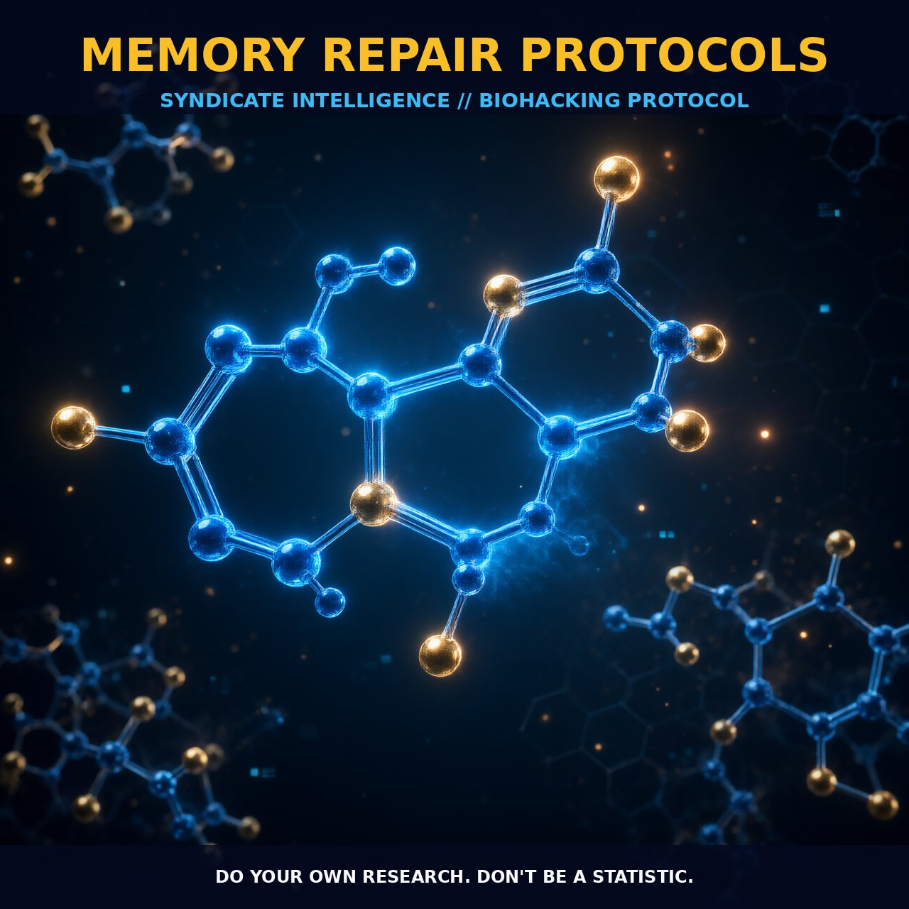

Enhancing Memory Repair with Resolvins and NMDA Modulation

1. The Mechanism
Memory repair protocols are designed to enhance the brain's capacity to encode, store, and retrieve information. This is achieved through the modulation of synaptic plasticity and the activation of specialized pro-resolving mediators (SPMs). SPMs, such as resolvins derived from omega-3 fatty acids, play a crucial role in reducing inflammation and promoting the resolution of inflammatory responses, which are critical for neuronal health.
The SPM network operates through specific pathways that include the resolution of inflammation by promoting the clearance of inflammatory cells and the stabilization of microglial cells in a quiescent state. This stabilization enhances the brain's ability to maintain synaptic integrity and facilitate neuroplasticity, thereby supporting memory repair.
In addition to SPMs, memory repair protocols often involve the modulation of the NMDA receptor, a critical component in the process of memory formation. Activation of the NMDA receptor through the influx of calcium ions is essential for the consolidation of long-term memory. The phosphorylation of proteins such as protein kinase C (PKC) and the activation of various signaling cascades, including cyclic AMP (cAMP), are pivotal in this process. These cascades facilitate the strengthening of synaptic connections, which is fundamental for encoding and storing information in the brain.
2. Biological Leverage
The biological leverage of memory repair protocols lies in their ability to enhance the resolution of inflammation, a key factor in neuronal health and cognitive function. By promoting the production of resolvins, these protocols can effectively reduce the oxidative stress and inflammatory cytokines that often contribute to neuronal damage. Resolvins act through the activation of specific G protein-coupled receptors (GPCRs), such as the chemotactic receptor-like homologous molecule expressed on Th2 cells (CHL1) and the formyl peptide receptor-like 1 (FPR1), thereby modulating the inflammatory response and supporting the resolution of inflammation.
Moreover, the modulation of NMDA receptors through specific compounds, such as arginine-derived neuromodulators, can enhance the functional capacity of these receptors. This enhancement can lead to increased calcium influx and subsequent activation of signaling pathways that are critical for synaptic plasticity. For instance, arginine-derived neuromodulators can stabilize the NMDA receptor in an activated state, thereby supporting the strengthening of synaptic connections and the consolidation of memory. The activation of these pathways is essential for the maintenance of cognitive function and the repair of memory deficits.
3. Tactical Implementation
The tactical implementation of memory repair protocols involves the strategic use of resolvins and NMDA receptor modulators to enhance memory repair. Resolvins can be administered in low-to-moderate amounts, typically through dietary sources such as fish oil or through direct supplementation. These compounds should be taken consistently to maintain a steady level of SPMs in the brain, thereby promoting the resolution of inflammation and supporting neuronal health.
For NMDA receptor modulation, arginine-derived neuromodulators can be used in combination with other cognitive enhancers. Dosage ranges for these compounds are not well established but should be used in a manner that does not induce excessive activation of the NMDA receptor, which can lead to excitotoxicity. A practical approach is to start with a low dose and gradually increase as tolerated, typically in the range of 100-200 mg per day. Timing is crucial, with these compounds being most effective when taken in the morning or early afternoon to support cognitive function throughout the day.
Stacking notes: It is beneficial to combine resolvins with NMDA receptor modulators to achieve synergistic effects. For example, combining fish oil supplements with arginine-derived neuromodulators can provide a comprehensive support for both synaptic plasticity and the resolution of inflammation. Additionally, incorporating other cognitive enhancers, such as choline or phosphatidylserine, can further enhance the efficacy of memory repair protocols.
Prostar Life Hack
Combine fish oil supplements with arginine-derived neuromodulators for a synergistic boost in synaptic plasticity and inflammation resolution.
[ AUTHOR: LEAD TECHNICAL RESEARCHER ]